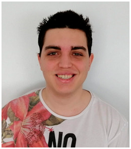

Dídac Romero - Coder

I’m Dídac Romero, coder and lead of the small audio team. Games and audio are probably my biggest passions, and in this project I was able to contribute to both. For the most part of the project I have been one of the coders of Broken Engine and at the latest stages of the project I got to lead the small audio team, whilst also developing some gameplay code for The Witcher: Ties of Destiny.
My role in the code team has been to develop the scripting system of the engine, based on Lua. It’s important to note that in a previous subject we would develop a game engine in pairs or individually. This game engine had just the basics to start implementing the different subsystems an engine would have, and we would implement 1 subsystem. My colleague Carles Homs and I chose the scripting system, and we chose to use Lua because we liked the idea of messing around an interpreted language that was different to what we were accustomed to code with.
As the scripting system coder I began my journey on improving the rudimentary scripting system in order to make life easier to everyone who would be using it on Broken Engine.
A new approach: As a student, I’m always trying to think every bit of what I’m going to code and develop it from scratch. This skill was very helpful when I wouldn’t find much documentation on how to build a scripting system in Lua, but from now on everything was different, I had to be fast to give quality of life improvements to my colleagues coding in Lua.
My new approach has been to try to integrate or use external tools that would have taken a lot of time to develop. This way the team had quality tools and improvements that reduced the time needed to develop scripts.
PROJECT CONTRIBUTION
- Scripting System & Improvements: I developed the whole scripting system of Broken Engine, from the management of the pipeline during execution to the hot reloading capabilities and the basic functionalities for the display and edition of variables from the inspector
- Script Debugging: Browsing through many libraries and solutions for this issue I choose to implement some code to support the usage of the Zero Brane Studio IDE, which is a Lua centered IDE with all capabilities necessary to debug any script. We basically attach the Lua virtual machine to the IDE that can then use all its prepared code to properly manage debugging.
- Autocomplete: Since everyone used Visual Studio Code to code scripts for the game, I developed a small autocomplete functionality that uses the KeyRing plugin from the VSCode marketplace (a tool made by the modding community of Warcraft) to display the functions that can be called to alter the state of the game. Unfortunately the system required to be manually updated, and I would love to improve in this area by using some sort of code reflection library in the future as a personal project.
- Callbacks: The engine had to support many callback functionalities for all kind of subsystems such as UI, or more complex callbacks such as physics events like collisions and triggers. I developed a simple way to make callbacks from any system and helped the different subsystem programmers to implement the functionality in their pipeline in a safe and effective way.
- Script to script communication: Using the Lua bridge wrapper I found a way to pass complete scripts as reference to other scripts that requested them, giving them full access to the public members and functions, which were updated at all times since it was a direct reference.
- Lua to C++ “translator”: I developed an utility that allows the engine to use custom types such as vector 3 or quaternions previously defined in a Lua document, and properly parse and change or use its data. This was notoriously good to avoid code repetition and make sure you could define functions to dump engine information into newly created lua tables and vice versa, allowing the engine programmers to create functions to fully customize what they wanted to do with those data structures. Furthermore, this system allowed the creation of local memory in lua that could be referenced later in other scripts, whilst allowing the gameplay programers the possibility to access these vectors or quaternions by typing for instance vector.x instead of vector[1].
- Gamepads Support: At the beginning of the project I implemented the gamepad support for gamepads and all its related scripting functionalities so that the gameplay programmers can use all of the capabilities implemented in the engine related to gamepads.
- Audio System Collaboration: Although Jacobo has been our audio programmer, I helped him in the implementation of Wwise RTPC’s or loading multiple soundbank files and designing a system to use the fastest way to communicate with wwise (UID’s) while using readable references to those UID’s by using strings, which were defined in various json files you can generate from Wwise.
- Audio Team coordination: Towards the last month and a half of development the leads and the producer created a small audio team (3-4 people) and I got the charge of leading the team. The team was created to implement and redesign some of the audio aspects of the game in order to fix the lack of audio the whole project had been suffering.
- Selection and implementation of Music: Since I really like music in games I got the charge to choose royalty free music that would fit the game’s theme, ambience and ambitions in terms of audio design. I also implemented the system of interactive music that plays throughout both levels and the voiceline system for characters and enemies simple lore, although some stuff on the enemies had to be rolled back in order to polish in a better way the most important aspects of the game’s audio.